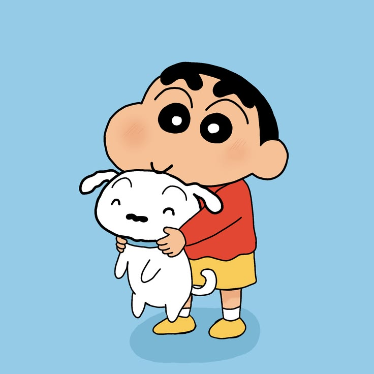
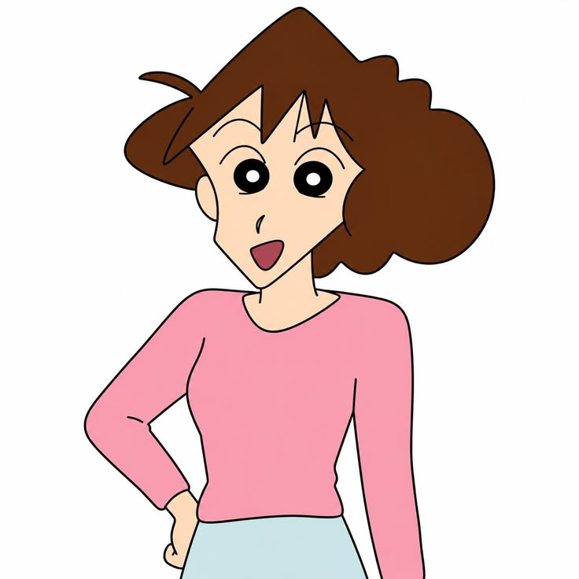

Shin-chan is always doing funny things and making trouble
at home. He likes playing, dancing, and making jokes.
His mother, Misae, sometimes gets angry when he does
not listen, but he always makes the family laugh.
Himawari Finds Something Shiny
Himawari loves shiny things.
Himawari is a cute baby who loves shiny objects.
She gets very excited whenever she sees jewelry or
something beautiful. Her love for shiny things often
creates funny moments for the Nohara family.
Shiro Becomes the Hero of the Day

Shiro is the family's loyal dog.
Shiro is the lovely white dog of the Nohara family.
He is smart, friendly, and always stays close to
Shin-chan. He loves playing with the family and is
always there to make their day better.
Hiroshi - The Hardworking Father
Hiroshi takes care of his family.
Hiroshi is the father of the Nohara family. He works
at an office to support his wife and children. Even
after a long day at work, he enjoys spending time
with his family.
Misae - The Caring Mother

Misae takes care of the family.
Misae is the mother of Shin-chan and Himawari.
She takes care of the house and looks after her
children. She sometimes gets angry with Shin-chan,
but she loves her family very much.